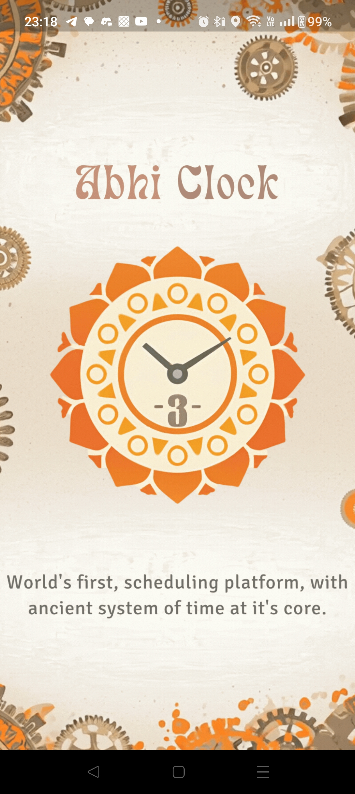
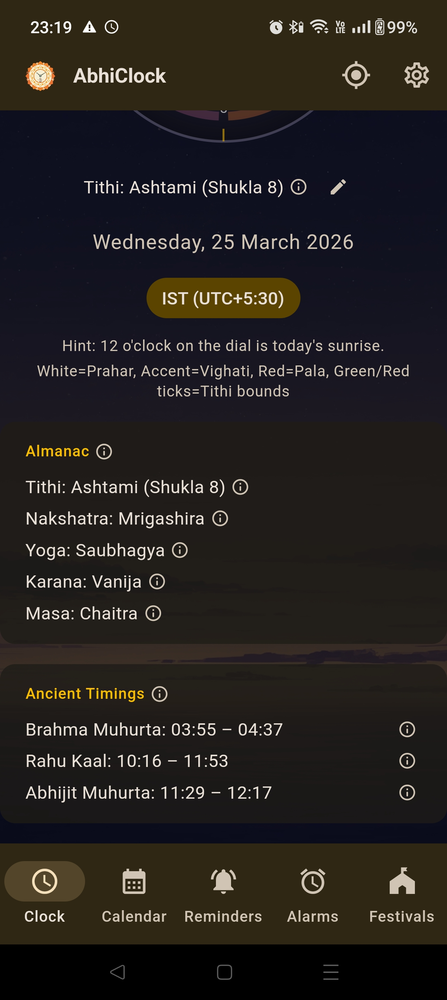
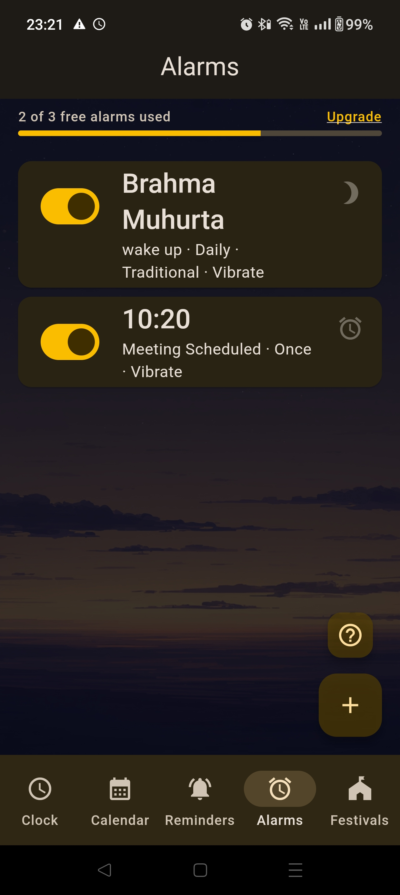
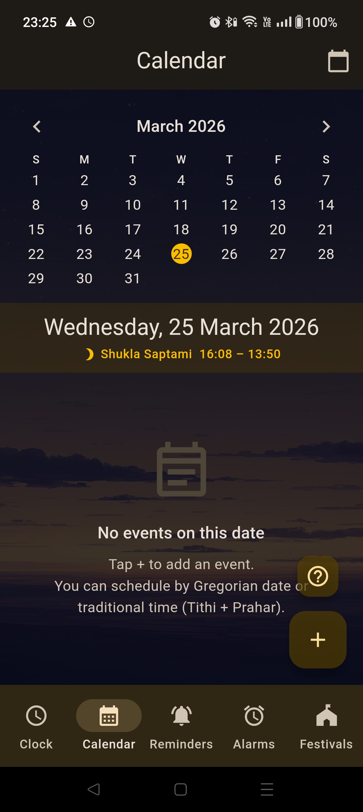
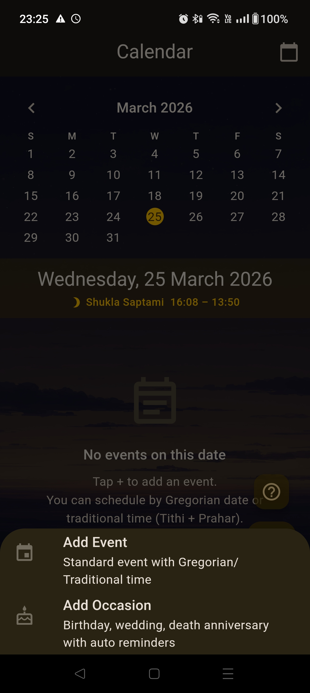
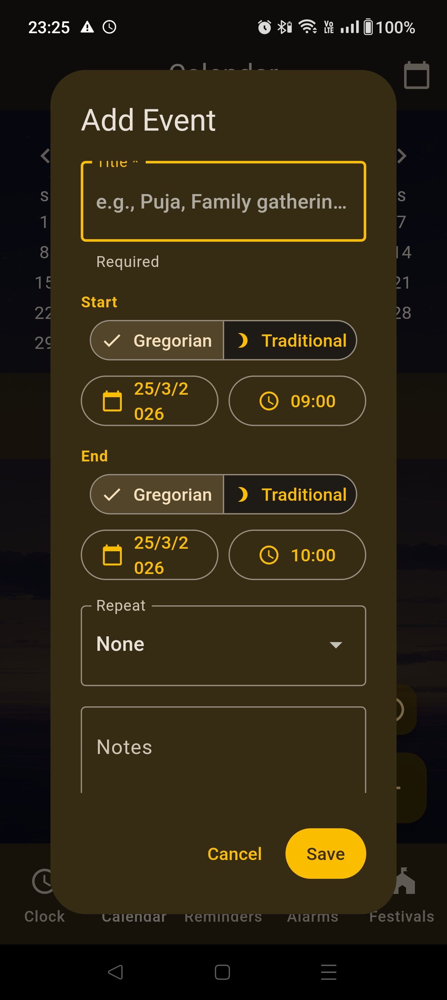
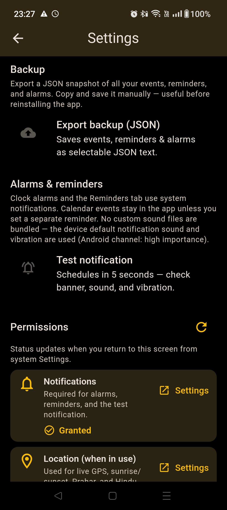
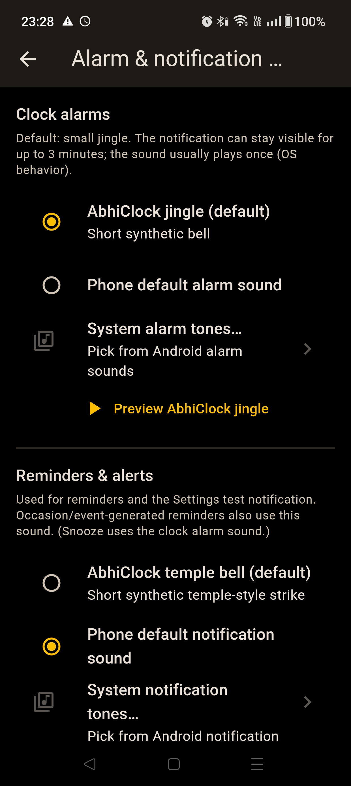
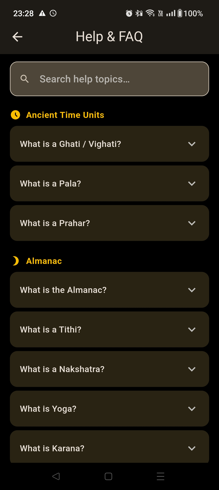

Prahar Dial Clock
Live Hindu astronomical dial with sunrise-based reckoning.
Traditional Wisdom, Modern Utility
Track Ghati, Vighati, Prahar, Panchang, alarms, reminders, and events in one focused app experience built for daily use.

Live Hindu astronomical dial with sunrise-based reckoning.
Tithi, Nakshatra, Yoga, Karana, and Masa in one view.
Gregorian + traditional trigger modes with custom tones.
Lifecycle alerts for start, ongoing event status, and end.
Sunrise/sunset tuned calculations for better precision.
Guided onboarding, contextual help, and practical defaults.
Real screens from the app flow: launch, clock, almanac, alarms, reminders, calendar, settings, and support.












Play release is in progress. This page will be updated with the official listing link.
Location improves sunrise/sunset based calculations for traditional timings. You can control permission in device settings.
Yes. The app supports bundled tones, platform defaults, and Android system-picked tones.